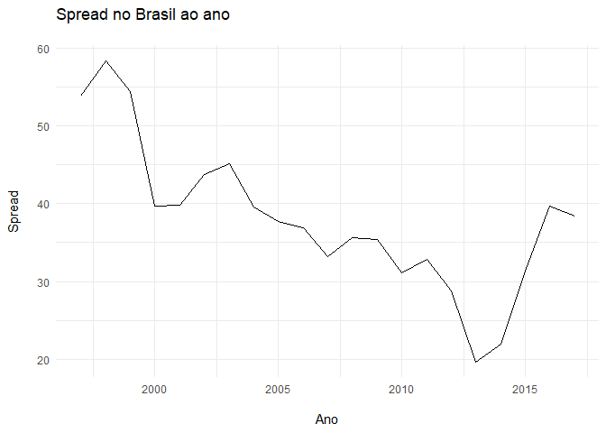
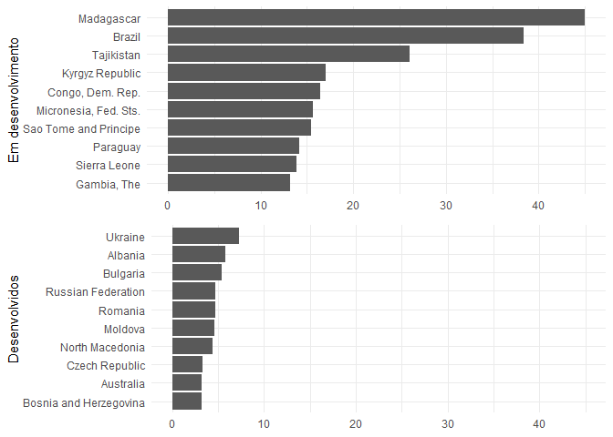

Spread bancário brasileiro: limpeza e visualização de dados
·
O altíssimo spread bancário 1 brasileiro é um motivo de preocupação das autoridades, já que dificulta uma economia mais guiada pelo crédito, dificultando o crescimento etc. Como estou estudando isso para monografia, pensei em visualizar exatamente quão alto ele é. Imaginei que não seria tão difícil com a ajuda do R, e não foi mesmo. Nesse post vou falar sobre a coleta de dados, o tratamento com o tidyverse e a visualização com o ggplot2.
Normalmente, pego séries econômicas sem sair do R e num formato já muito conveniente, com a ajuda de bibliotecas como rbcb, ipeadatar, sidrar etc. Mas, para esse caso em específico, eu tive que de fato sair procurando.
Acabei descobrindo que o World Bank registra a série Interest rate spread (lending rate minus deposit rate, %) anualmente para cada país. Além disso, foi tudo disponibilizado para download em um .csv.
E, como normalmente acontece com dados “selvagens”, ele não estava num formato tidy, limpo, que é como gostaríamos que estivesse para facilitar as coisas quando usamos R.
Se você não sabe, um tidy dataset é aquele em que cada coluna corresponde a uma variável e cada linha a uma observação.
Limpando os dados
Os dados eu baixei daqui e o arquivo eu nomeei “spreads.csv”. Vamos olhar como eles estão organizados e por que teremos que limpá-los.
library(tidyverse)
(dados <- read_csv("~/Blog/phelipetls.github.io/assets/spreads.csv",
skip = 4
))
## # A tibble: 264 x 64
## `Country Name` `Country Code` `Indicator Name` `Indicator Code` `1960`
## <chr> <chr> <chr> <chr> <dbl>
## 1 Aruba ABW Interest rate s~ FR.INR.LNDP NA
## 2 Afghanistan AFG Interest rate s~ FR.INR.LNDP NA
## 3 Angola AGO Interest rate s~ FR.INR.LNDP NA
## 4 Albania ALB Interest rate s~ FR.INR.LNDP NA
## 5 Andorra AND Interest rate s~ FR.INR.LNDP NA
## 6 Arab World ARB Interest rate s~ FR.INR.LNDP NA
## 7 United Arab E~ ARE Interest rate s~ FR.INR.LNDP NA
## 8 Argentina ARG Interest rate s~ FR.INR.LNDP NA
## 9 Armenia ARM Interest rate s~ FR.INR.LNDP NA
## 10 American Samoa ASM Interest rate s~ FR.INR.LNDP NA
## # ... with 254 more rows, and 59 more variables: `1961` <dbl>,
## # `1962` <dbl>, `1963` <dbl>, `1964` <dbl>, `1965` <dbl>, `1966` <dbl>,
## # `1967` <dbl>, `1968` <dbl>, `1969` <dbl>, `1970` <dbl>, `1971` <dbl>,
## # `1972` <dbl>, `1973` <dbl>, `1974` <dbl>, `1975` <dbl>, `1976` <dbl>,
## # `1977` <dbl>, `1978` <dbl>, `1979` <dbl>, `1980` <dbl>, `1981` <dbl>,
## # `1982` <dbl>, `1983` <dbl>, `1984` <dbl>, `1985` <dbl>, `1986` <dbl>,
## # `1987` <dbl>, `1988` <dbl>, `1989` <dbl>, `1990` <dbl>, `1991` <dbl>,
## # `1992` <dbl>, `1993` <dbl>, `1994` <dbl>, `1995` <dbl>, `1996` <dbl>,
## # `1997` <dbl>, `1998` <dbl>, `1999` <dbl>, `2000` <dbl>, `2001` <dbl>,
## # `2002` <dbl>, `2003` <dbl>, `2004` <dbl>, `2005` <dbl>, `2006` <dbl>,
## # `2007` <dbl>, `2008` <dbl>, `2009` <dbl>, `2010` <dbl>, `2011` <dbl>,
## # `2012` <dbl>, `2013` <dbl>, `2014` <dbl>, `2015` <dbl>, `2016` <dbl>,
## # `2017` <dbl>, `2018` <lgl>, X64 <lgl>
Além de um bando de NA, veja como a informação para cada ano está organizada. A cada coluna temos um ano, e abaixo o spread para cada país naquele ano. Pode até ser mais fácil visualizar os dados assim, mas não trabalhar com eles no R. O que devemos observar é que todas essas colunas são na verdade instâncias de uma única variável, o ano, e os valores também, o spread. Queremos, então, condensar toda essa massa de dados em duas colunas, transformar desse formato largo (wide) para um formato comprido (long).
Isso é uma tarefa muito fácil para função tidyr::gather. O que ela faz é
reunir um monte de colunas em uma coluna só. O primeiro argumento da função pede
o nome da variável das colunas, o segundo, o nome da variável dos valores, e o
terceiro, quais são as colunas que você quer reunir.
Mas, perceba também como os nomes estão sujos. O R não gosta de espaços etc. nos
nomes das colunas, então teremos que cuidar disso também. Isso é muito fácil de
fazer com a função janitor::clean_names().
library(janitor)
(dados <- dados %>%
clean_names() %>%
select(-x64) %>%
gather("ano", "spread", x1960:x2018) %>%
mutate(
ano = str_remove(ano, "x"),
ano = as.numeric(ano)
) %>%
select(-starts_with("indicator")) %>%
na.omit())
## # A tibble: 5,225 x 4
## country_name country_code ano spread
## <chr> <chr> <dbl> <dbl>
## 1 Japan JPN 1960 3.87
## 2 Japan JPN 1961 3.92
## 3 Japan JPN 1962 4.21
## 4 Japan JPN 1963 3.79
## 5 Japan JPN 1964 3.90
## 6 Japan JPN 1965 3.80
## 7 France FRA 1966 0.350
## 8 Japan JPN 1966 3.48
## 9 France FRA 1967 0.350
## 10 United Kingdom GBR 1967 1.29
## # ... with 5,215 more rows
Aconteceram algumas coisas aqui: primeiro, o readr::read_csv criou uma nova
coluna “x64”, que não me interessa então a tirei (a função dá um warning, mas eu
o omiti aqui). Daí que o clean_names prefixou um “x” às colunas com números, que
também removi com stringr::str_remove(). Eu também não vou precisar das
colunas com informações sobre o indicador. E, pronto, está limpo.
Visualização
Vamos primeiro ver como evoluiu o spread no Brasil no decorrer do tempo.
dados %>%
filter(country_name == "Brazil") %>%
ggplot(aes(ano, spread)) +
geom_line() +
labs(
x = "\nAno", y = "Spread\n",
title = "Spread no Brasil ao ano\n"
)

Veja como o spread vinha caindo sistematicamente, embora ainda fosse muito alto pros padrões internacionais. Com a crise, ele voltou a aumentar, voltando aos níveis do início do século.
Para visualizações entre países, seria interessante filtrar a base antes, por exemplo, como se compara o spread do Brasil com o de outros países da América do Sul? Para isso, vou usar essa base de dados, porque nela encontro o código de cada país, o nome de sua “região” e se ele é desenvolvido ou não.
url <- "https://pkgstore.datahub.io/core/country-codes/country-codes_csv/data/3b9fd39bdadd7edd7f7dcee708f47e1b/country-codes_csv.csv"
paises <- read_csv(url) %>%
clean_names() %>%
select(
iso3166_1_alpha_3,
intermediate_region_name,
developed_developing_countries
) %>%
setNames(c("codigo", "regiao", "status_desenvolvimento"))
## Parsed with column specification:
## cols(
## .default = col_character(),
## `ISO4217-currency_minor_unit` = col_number(),
## M49 = col_double(),
## GAUL = col_number(),
## `Geoname ID` = col_double(),
## `Global Code` = col_logical(),
## `Intermediate Region Code` = col_double(),
## `Region Code` = col_double(),
## `Sub-region Code` = col_double()
## )
## See spec(...) for full column specifications.
paises %>% glimpse()
## Observations: 250
## Variables: 3
## $ codigo <chr> "TWN", "AFG", "ALB", "DZA", "ASM", "AND...
## $ regiao <chr> NA, NA, NA, NA, NA, NA, "Middle Africa"...
## $ status_desenvolvimento <chr> NA, "Developing", "Developed", "Develop...
Vamos obter um vetor com o código dos países da América do Sul, para assim podermos filtrar a base do spread.
america_sul <- paises %>%
filter(regiao == "South America") %>%
pull(codigo)
america_sul
## [1] "ARG" "BOL" "BVT" "BRA" "CHL" "COL" "ECU" "FLK" "GUF" "GUY" "PRY"
## [12] "PER" "SGS" "SUR" "URY" "VEN"
E com isso podemos fazer uma visualização dos spreads na América do Sul, para os anos de 2015 a 2017, por exemplo. No que podemos ver que o Brasil domina em termos de spread, para nossa infelicidade:
theme_set(theme_minimal())
anos <- 2015:2017
dados %>%
filter(
country_code %in% america_sul,
ano %in% anos
) %>%
mutate(country_name = fct_reorder(country_name, spread)) %>%
ggplot(aes(x = country_name, y = spread)) +
geom_col() +
labs(y = "Spread", x = NULL) +
facet_wrap(. ~ ano) +
coord_flip()

E que tal contrastar os 15 maiores spreads de países em desenvolvimento versus desenvolvidos, pro ano de 2017? Na outra tabela tem uma coluna que pode nos ajudar com isso. Para isso, fiz um join para depois filtrar e criar os gráficos que eu queria.
df <- left_join(dados, paises, by = c(country_code = "codigo"))
plot1 <- df %>%
filter(ano == 2017, status_desenvolvimento == "Developing") %>%
top_n(10, spread) %>%
ggplot(aes(reorder(country_name, spread), spread)) +
geom_col() +
labs(x = "Em desenvolvimento", y = NULL) +
coord_flip()
plot2 <- df %>%
filter(ano == 2017, status_desenvolvimento == "Developed") %>%
top_n(10, spread) %>%
ggplot(aes(reorder(country_name, spread), spread)) +
geom_col() +
labs(x = "Desenvolvidos", y = NULL) +
expand_limits(y = 45) +
coord_flip()
library(gridExtra)
grid.arrange(plot1, plot2, nrow = 2)

Vemos, assim, que a situação do Brasil é meio crítica quando se olha para o mercado de crédito. Está no meio de países muito pequenos ou pobres (não que o Brasil também não seja) no lado subdesenvolvido. Enquanto que no lado dos desenvolvidos, está em peso o Leste Europeu etc., antigos países soviéticos.
Não é tão claro, ao menos para mim, o porquê disso, é justamente o meu intuito entender. Se, por um lado, alguns culpam a concentração bancária, que no Brasil não é desprezível mesmo, por outro ela não nessariamente significa que o mercado não é competitivo, sendo também um fator a considerar os ganhos de eficiência que isso pode significar, com o advento das economias de escala. Normalmente se fala com razão do alto nível da Selic (ou de sua volatilidade), que implica um custo de oportunidade para investimentos (e um risco para os bancos, que eventualmente têm de recorrer ao mercado interbancário quando há descompassos entre demandas por empréstimos e ofertas de depósitos), hoje já se questiona isto, visto que a Selic está estável há meses e em níveis historicamente baixos. Outra razão pode ser a inadimplência, que realmente é considerável e da qual os bancos se protegem via spread. Ou mesmo o cumpulsório, as instituições, os impostos etc.
Enfim, é um assunto bastante extenso, que para mim ainda é um tanto quanto nebuloso. O plano é analisar os seus determinantes quantitativamente, a partir da estimação de um modelo, provavelmente um de vetores autorregressivos.
paga aos depositantes.
-
A diferença entre o que banco cobra ao emprestar e o que ele ↩︎